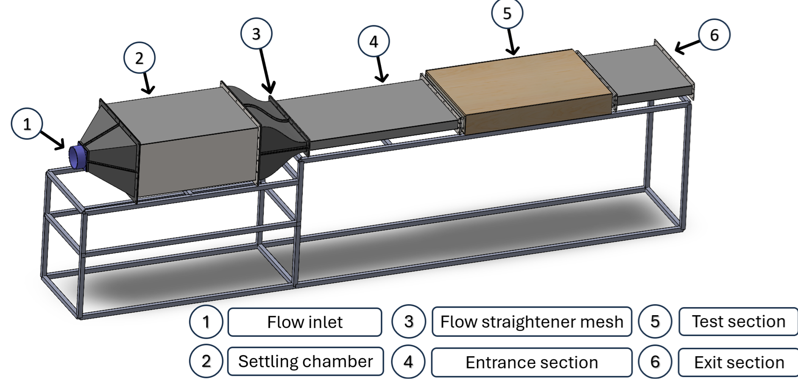
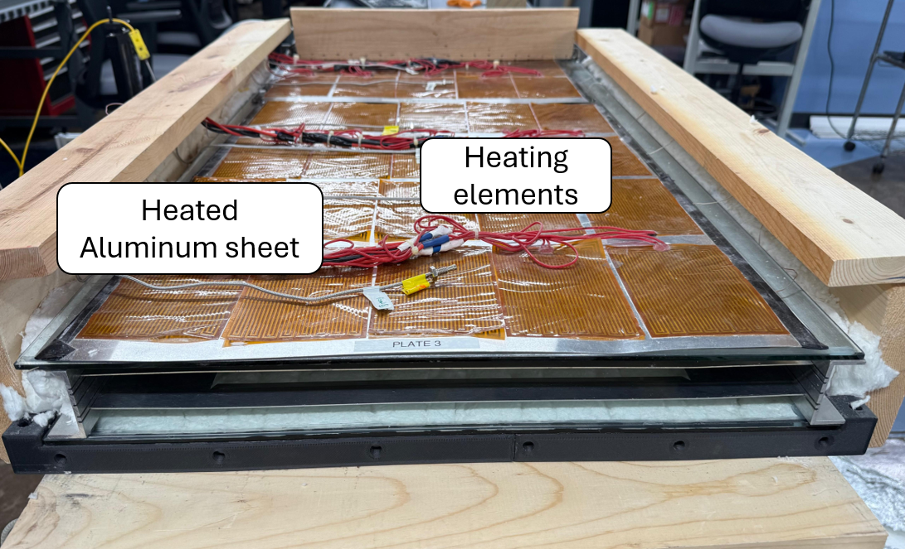
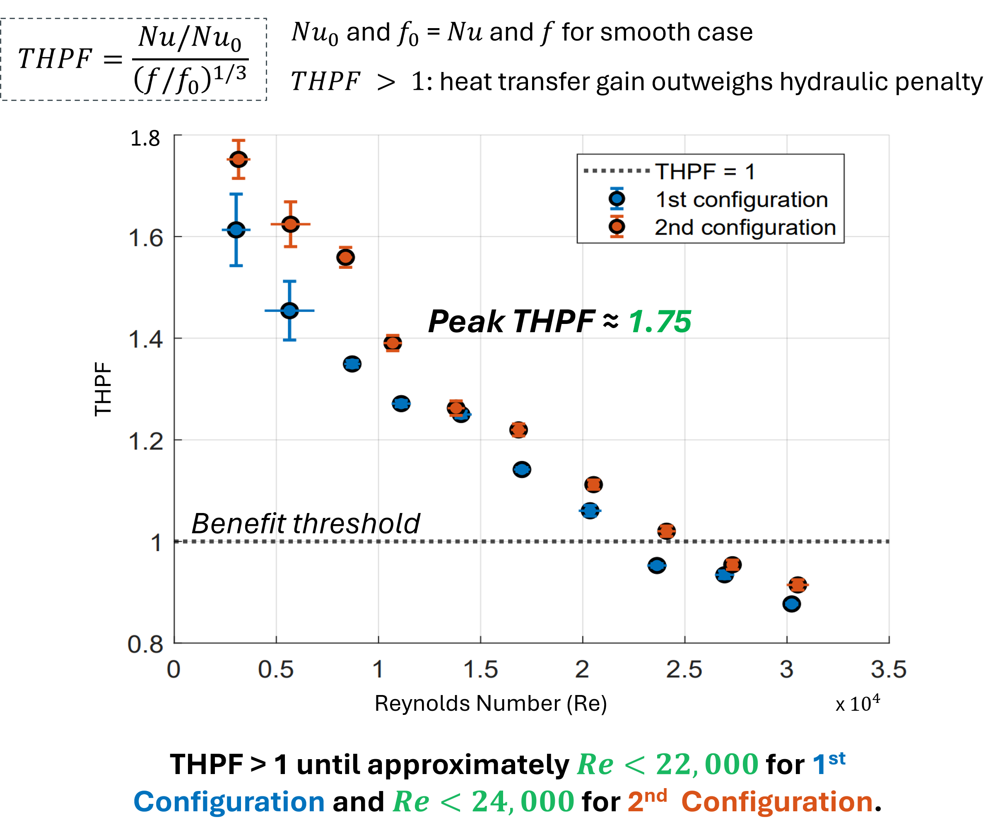

Passive Boundary-Layer Flow Control & Heat Transfer Enhancement
4.0x
Max Nu Gain
1.74
Peak THPF
Re 3k–30k
Operating Envelope
±10%
Error Bound Agreement
Experimental Investigation
Evaluated the thermo-hydraulic trade-offs of passive boundary-layer disruption in forced-convection air channels using louvered-sheet inserts. Tested across Reynolds numbers spanning 3,000 to 30,000 to determine whether convective gains (Nusselt number, Nu) outweigh parasitic aerodynamic pumping power (friction factor, f).
Configuration 2 (louvered sheets placed at 1/4 and 3/4 duct heights) sustained superior mixing and thermal-hydraulic performance factors (THPF > 1) up to Re ≈ 24,000, achieving an optimal operational balance compared to tighter core placements.
Hardware & Data Diagnostics

Experimental Setup
Modular test section CAD assembly featuring settling chamber, flow straightener honeycomb, and optical access zones.

Instrumentation & Thermal Array
Heated plate underside showing wiring for 300 W uniform electric heating elements and multi-channel Type-K thermocouple grid.

Empirical Validation Curves
Extracted MATLAB reduction curves comparing Configuration 1 vs Configuration 2 THPF metrics against smooth-duct baselines across the Re 3,000–30,000 operating envelope.

Thermo–hydraulic validation of the smooth channel

Thermal performance of the two tested configurations compared to the smooth reference case
Instrumentation & Data Processing
- Thermal Mapping: Instrumented an array of 23 Type-K thermocouples (±1.1°C) monitoring inlet, absorbing plate, and downstream air mixing to isolate spatial temperature gradients.
- Differential Pressure Measurement: Deployed Amphenol DLHR-L01D digital piezoresistive transducers (±250 Pa, ±0.25% FS accuracy) to record minute low-velocity drop variations.
- Embedded Sampling Architecture: Built a synchronized Raspberry Pi DAQ interface executing at 20 Hz (600 readings/trial) to guarantee statistical convergence.
- Automated Reduction: Created MATLAB processing pipelines for bulk temperature evaluation, empirical power-law modeling, and Kline-McClintock uncertainty propagation (f ±4.0%, Nu ±6.2%, THPF ±6.4%).
Publications & Dissemination
Conference Proceedings (Co-Author):
Khair, M., Binu, A., Ferreira, W., Dezan, D., Gallego, A., Pinto, R., Duarte, R., & Guimarães, T., "Performance Enhancement of Solar Air Heaters Using Passive Flow Controllers: Experimental Study with Louvered Sheets," Proceedings of the 18th International Heat Transfer Conference (IHTC-18), Rio de Janeiro, Brazil.
Khair, M., Binu, A., Ferreira, W., Dezan, D., Gallego, A., Pinto, R., Duarte, R., & Guimarães, T., "Performance Enhancement of Solar Air Heaters Using Passive Flow Controllers: Experimental Study with Louvered Sheets," Proceedings of the 18th International Heat Transfer Conference (IHTC-18), Rio de Janeiro, Brazil.
Academic Poster Presentations:
• CERS 2026: Penn State College of Earth and Mineral Sciences Exhibition.
• Climate Solutions Symposium: Technical briefing on passive thermo-hydraulic optimization.
• CERS 2026: Penn State College of Earth and Mineral Sciences Exhibition.
• Climate Solutions Symposium: Technical briefing on passive thermo-hydraulic optimization.